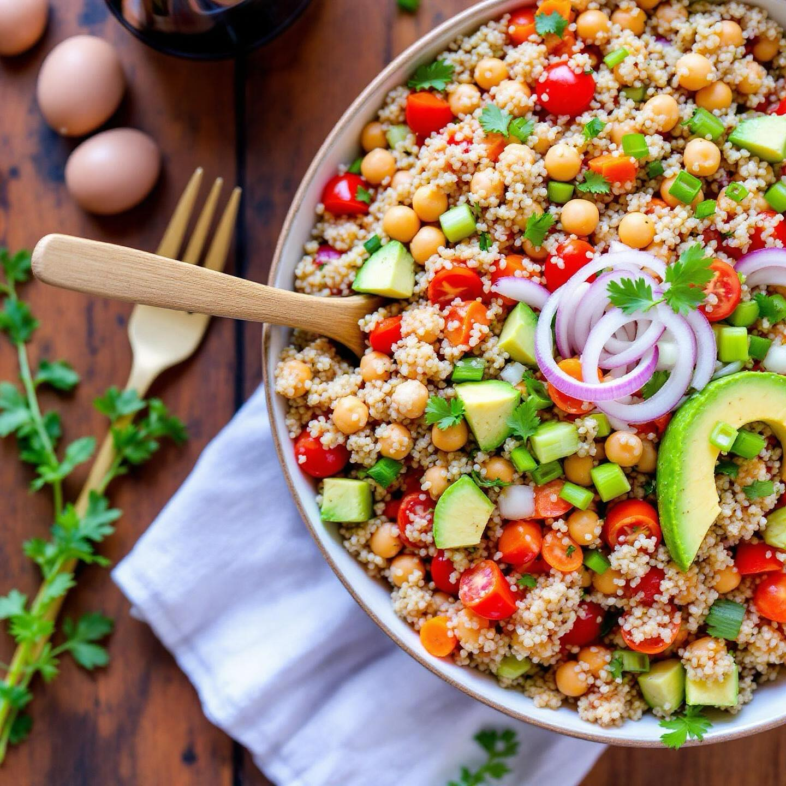

🌾 Quinoa con Ceci Secchi
Ingredienti:
- 150g di quinoa
- 150g di ceci secchi (o 300g precotti)
- 3 pomodori maturi
- 1 cipolla
- 1 avocado
- 1 gambo di sedano
- Olio extravergine d'oliva q.b.
- Sale e pepe q.b.
- Succo di limone
👨🍳 Preparazione
- Se usi i ceci secchi, mettili in ammollo per 12 ore e cuocili per 1 ora.
- Cuoci la quinoa in acqua salata per 15 minuti, poi scolala.
- Taglia i pomodori a cubetti, la cipolla a fette e il sedano a rondelle.
- Taglia l'avocado a fette.
- In una ciotola, mescola la quinoa con ceci, pomodori, cipolla e sedano.
- Aggiungi l'avocado, olio EVO, sale, pepe e limone.
- Servi a temperatura ambiente o leggermente fredda.
💡 Consigli
Questa insalata è un piatto completo, ricco di proteine vegetali e fibre. La quinoa è un pseudo-cereale senza glutine, perfetto per chi è intollerante. L'avocado aggiunge grassi sani e cremosità.
🌾 Quinoa with Dried Chickpeas
Ingredients:
- 150g quinoa
- 150g dried chickpeas (or 300g precooked)
- 3 ripe tomatoes
- 1 onion
- 1 avocado
- 1 celery stalk
- Extra virgin olive oil to taste
- Salt and pepper to taste
- Lemon juice
👨🍳 Preparation
- If using dried chickpeas, soak them for 12 hours and cook for 1 hour.
- Cook the quinoa in salted water for 15 minutes, then drain.
- Dice the tomatoes, slice the onion and cut the celery into rounds.
- Slice the avocado.
- In a bowl, mix the quinoa with chickpeas, tomatoes, onion and celery.
- Add the avocado, EVO oil, salt, pepper and lemon.
- Serve at room temperature or slightly chilled.
💡 Tips
This salad is a complete dish, rich in plant-based protein and fiber. Quinoa is a gluten-free pseudo-cereal, perfect for those who are intolerant. Avocado adds healthy fats and creaminess.
🌾 Quinoa con Garbanzos Secos
Ingredientes:
- 200g de quinoa
- 200g de garbanzos secos (o 400g precocidos)
- 3 tomates maduros
- 1 cebolla
- 1 aguacate
- 1 tallo de apio
- Aceite de oliva virgen extra al gusto
- Sal y pimienta al gusto
- Zumo de limon
👨🍳 Preparacion
- Si utiliza garbanzos secos, pongalos en remojo durante 12 horas y cuezalos durante 1 hora.
- Cocina la quinoa en agua salada durante 15 minutos, luego escurrirla.
- Corta los tomates en cubitos, la cebolla en rodajas y el apio en rodajas.
- Corta el aguacate en rodajas.
- En un bol, mezcla la quinoa con garbanzos, tomates, cebolla y apio.
- Anade el aguacate, aceite EVO, sal, pimienta y limon.
- Sirva a temperatura ambiente o ligeramente fria.
💡 Consejos
Esta ensalada es un plato completo, rico en proteinas vegetales y fibra. La quinoa es un pseudo-cereal sin gluten, perfecto para quienes son intolerantes. El aguacate anade grasas saludables y cremosidad.
🌾 Quinoa com Grao-de-Bico Seco
Ingredientes:
- 150g de quinoa
- 150g de grao-de-bico seco (ou 300g pre-cozido)
- 3 tomates maduros
- 1 cebola
- 1 abacate
- 1 talo de aipo
- Azeite extra virgem a gosto
- Sal e pimenta a gosto
- Sumo de limao
👨🍳 Preparacao
- Se utilizar grao-de-bico seco, coloque-o de molho durante 12 horas e coza durante 1 hora.
- Cozinhe a quinoa em agua salgada durante 15 minutos, depois escorra.
- Corte os tomates em cubinhos, a cebola em rodelas e o aipo em rodelas.
- Corte o abacate em fatias.
- Numa tigela, misture a quinoa com grao-de-bico, tomates, cebola e aipo.
- Junte o abacate, azeite EVO, sal, pimenta e limao.
- Sirva a temperatura ambiente ou ligeiramente fria.
💡 Dicas
Esta salada e um prato completo, rico em proteinas vegetais e fibras. A quinoa e um pseudo-cereal sem gluten, perfeito para quem e intolerante. O abacate acrescenta gorduras saudaveis e cremosidade.
🌾 Quinoa mit getrockneten Kichererbsen
Zutaten:
- 150g Quinoa
- 150g getrocknete Kichererbsen (oder 300g vorgekochte)
- 3 reife Tomaten
- 1 Zwiebel
- 1 Avocado
- 1 Selleriestange
- Natives Olivenoel extra nach Geschmack
- Salz und Pfeffer nach Geschmack
- Zitronensaft
👨🍳 Zubereitung
- Wenn Sie getrocknete Kichererbsen verwenden, legen Sie sie 12 Stunden ein und kochen Sie sie 1 Stunde.
- Die Quinoa in Salzwasser 15 Minuten kochen, dann abtropfen lassen.
- Die Tomaten wuerfeln, die Zwiebel in Scheiben und den Sellerie in Ringe schneiden.
- Die Avocado in Scheiben schneiden.
- In einer Schuessel Quinoa mit Kichererbsen, Tomaten, Zwiebel und Sellerie vermischen.
- Die Avocado, natives Olivenoel, Salz, Pfeffer und Zitrone hinzufuegen.
- Bei Zimmertemperatur oder leicht gekuehlt servieren.
💡 Tipps
Dieser Salat ist ein vollwertiges Gericht, reich an pflanzlichem Protein und Ballaststoffen. Quinoa ist ein glutenfreies Pseudo-Getreide, perfekt fuer Unvertraegliche. Avocado liefert gesunde Fette und Cremigkeit.
🌾 Κινόα με Ξερά Ρεβίθια
Συστατικά:
- 150g κινόα
- 150g ξερά ρεβίθια (ή 300g προψημένα)
- 3 ώριμες ντομάτες
- 1 κρεμμύδι
- 1 αβοκάντο
- 1 στέλεχος σέλινου
- Έξτρα παρθένο ελαιόλαδο κατά βούληση
- Αλάτι και πιπέρι κατά βούληση
- Χυμός λεμονιού
👨🍳 Εκτέλεση
- Αν χρησιμοποιείτε ξερά ρεβίθια, μουσκέψτε τα για 12 ώρες και βράστε τα για 1 ώρα.
- Βράστε την κινόα σε αλατισμένο νερό για 15 λεπτά, μετά στραγγίστε την.
- Κόψτε τις ντομάτες σε κύβους, το κρεμμύδι σε φέτες και το σέλινο σε ροδέλες.
- Κόψτε το αβοκάντο σε φέτες.
- Σε ένα μπολ, αναμείξτε την κινόα με ρεβίθια, ντομάτες, κρεμμύδι και σέλινο.
- Προσθέστε το αβοκάντο, ελαιόλαδο, αλάτι, πιπέρι και λεμόνι.
- Σερβίρετε σε θερμοκρασία δωματίου ή ελαφρώς κρύα.
💡 Συμβουλές
Αυτή η σαλάτα είναι ένα πλήρες πιάτο, πλούσιο σε φυτικές πρωτεΐνες και φυτικές ίνες. Η κινόα είναι ένα ψευδο-δημητριακό χωρίς γλουτένη, ιδανικό για όσους είναι δυσανεκτικοί. Το αβοκάντο προσθέτει υγιεινά λίπη και κρεμώδη υφή.